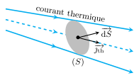
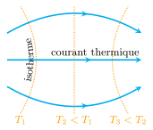
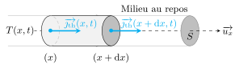
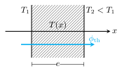
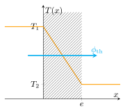
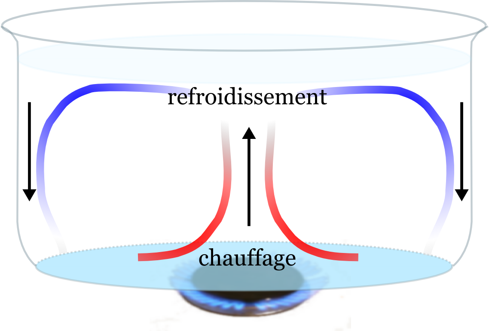
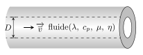
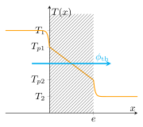

Définition :
La conduction (ou diffusion) thermique est un mode de transport thermique sans déplacement
macroscopique de matière. Ce transfert s’effectue de proche en proche des parties chaudes
vers les parties froides, grâce à l’agitation thermique.
Citons quelques exemples que l’on rencontre au quotidien :
le fer à repasser transfère de la chaleur aux tissus repassés par conduction
la plaque électrique permet de chauffer une casserole d’eau par conduction
la sensation de froid que l’on ressent au contact d’une règle métallique est produit
par conduction thermique
La conduction thermique nécessitant la présence de matière, il est impossible de transporter
de la chaleur via ce mode de transfert dans le vide.
Pour caractériser le transport thermique, on définit deux grandeurs : le flux
thermique et le courant thermique.
Le flux thermique \(\phi_\text{th}\) désigne la puissance thermique qui traverse une
surface :
$$
\quad \boxed{ \phi_\text{th} = \frac{\delta Q}{\mathrm{d}t} }
$$
La densité de courant thermique \(\overrightarrow{j_\text{th}}\) mesure la
répartition du courant thermique dans un milieu. \(\overrightarrow{j_\text{th}}\) est
orienté dans le sens du transfert thermique et \(|\overrightarrow{j_\text{th}}|\) désigne le
flux thermique par unité de surface (en \(\rm{W.m^{-2}}\)). Plus généralement, le flux
thermique traversant une surface \((S)\) s’exprime en fonction de
\(\overrightarrow{j_\text{th}}\) :
$$
\quad \boxed{ \phi_\text{th} =
\iint_{(S)} \overrightarrow{j_\text{th}} \cdot \overrightarrow{\mathrm{d}S} }
$$

Le flux thermique est le flux de la densité de courant thermique.
Loi de Fourier
En 1822, Jean-Baptiste Joseph Fourier, publie son Traité analytique de la chaleur
dans lequel il énonce la loi relative à la diffusion thermique :
$$
\quad \boxed{ \begin{aligned}
\overrightarrow{j_\text{th}} &= - \lambda \overrightarrow{\nabla} T \\
\left[\rm{W/m^2}\right] &= \left[\rm{W.m^{-1}.K^{-1}}\right]
\times \left[\rm{K.m^{-1}}\right]
\end{aligned}
}
$$
où \(\lambda\) est une constante positive appelée conductivité thermique.
Cette loi traduit le fait que le courant thermique est perpendiculaire aux isothermes et
dirigé des parties chaudes vers les parties froides. Plus le gradient de température est
important, plus le courant thermique l’est aussi.
La conductivité thermique est caractéristique du milieu dans le lequel s’effectue le
transfert thermique. Plus la conductivité thermique est importante moins le milieu résiste
au transfert thermique.

Le courant thermique est perpendiculaire aux isothermes et dirigé du chaud vers
le froid.
Équation de la chaleur
Cas unidimensionnel
Considérons le cas simple d’un milieu au repos soumis à un gradient thermique dans la
direction \((Ox)\). On note \(T(x,t)\) la température à un instant \(t\) en un point \(M\)
d’abscisse \(x\). Cherchons alors à établir l’équation qui donne l’évolution dans l’espace
et le temps du champ de température à partir d’un bilan thermique effectué sur une portion
de section \(S\) située entre les abscisses \(x\) et \(x + \mathrm{d}x\).

Bilan d’énergie dans un problème à 1 dimension.
On adoptera les hypothèses suivantes :
le milieu est au repos : la diffusion thermique est le seul mode transfert
thermique considéré
la capacité thermique massique \(c_p\), la masse volumique \(\rho\) ainsi que la
conductivité thermique \(\lambda\) sont considérés constantes
le milieu n’est le siège d’aucune réaction chimique ni d’aucun processus produisant ou
consommant de la chaleur
la pression extérieure est maintenue constante
Le premier principe de la thermodynamique appliqué à ce système entre les instants \(t\) et
\(t + \mathrm{d}t\) donne :
$$
\quad H(t + \mathrm{d}t) - H(t) = \delta Q_p
$$
où \(H\) est l’enthalpie de la portion étudiée.
Le transfert thermique que reçoit le système s’écrit :
$$
\quad \delta Q_p = \phi_\text{reçu} \mathrm{d}t
= [j_\text{th}(x)S - j_\text{th}(x + \mathrm{d}x)S]\mathrm{d}t
= - \frac{\mathrm{d}j_\text{th}}{\mathrm{d}x} S \mathrm{d}x \mathrm{d}t
$$
La température variant à priori dans le temps, l’enthalpie du système varie :
$$
\quad \mathrm{d}H = H(t+\mathrm{d}t) - H(t) = \frac{\mathrm{d}H}{\mathrm{d}t}\mathrm{d}t
= \left[ \left. \frac{\partial H}{\partial T} \right|_p
\frac{\partial T}{\partial t} \right]\mathrm{d}t
$$
Or par définition, \(\left. \partial H/\partial T \right|_p\) désigne la capacité thermique
à pression constant \(C_p\) du système :
$$
\quad \left. \frac{\partial H}{\partial T} \right|_p = C_p = \rho S \mathrm{d}x c_p
$$
où \(c_p\) représente la capacité thermique massique.
Le premier principe se réécrit donc :
$$
\quad \left[ \rho S \mathrm{d}x c_p \frac{\partial T}{\partial t} \right] \mathrm{d}t
= - \frac{\mathrm{d}j_\text{th}}{\mathrm{d}x} S \mathrm{d}x \mathrm{d}t
$$
Si on ajoute à cela la loi de Fourier, on trouve finalement :
$$
\quad \boxed{ \frac{\partial T}{\partial t} =
\frac{\lambda}{\rho c_p } \frac{\partial^2 T}{\partial x^2} }
$$
Le champ de température vérifie une équation de diffusion unidimensionnelle dite équation
de la chaleur.
Cas tridimensionnel
Cette équation se généralise en trois dimensions. Si l’on conserve les mêmes hypothèses, on
trouve :
$$
\quad \boxed{ \frac{\partial T}{\partial t} = \frac{\lambda}{\rho c_p }
\left( \frac{\partial^2 T}{\partial x^2} + \frac{\partial^2 T}{\partial y^2}
\frac{\partial^2 T}{\partial z^2} \right) }
$$
Le champ de température vérifie donc une équation aux dérivées partielles d’ordre deux. Son
intégration fait alors apparaître des constantes d’intégration que l’on détermine grâce aux
conditions initiales et aux limites.
L’équation de la chaleur brise la symétrie \(t/-t\) ce qui traduit l’irréversibilité des
phénomènes de transfert thermique.
Conditions aux limites
Résoudre l’équation de la chaleur consiste à déterminer le champ de température dans un
espace \(\Omega\) sachant que l’on connaît les conditions initiales ainsi que les propriétés
sur la frontière \(\delta \Omega\). Dans la pratique on distingue différents cas :
Le système est en contact parfait avec un thermostat de température \(T_0\) :
à chaque instant on a la condition aux limites :
$$
\quad T(M,t) = T_0 \quad \forall M \in \delta \Omega
$$
Le système est solide et présente une surface de contact avec un autre solide. Si le
contact n’est pas parfait, la température n’est pas continue. Cependant le flux thermique
est continu.
Le système est parfaitement calorifugé c’est-à-dire entouré d’une paroi adiabatique.
Dans ce cas :
$$
\quad \overrightarrow{j_\text{th}}(M,t) \cdot \overrightarrow{n}{}^\text{ext} = 0
\quad \forall M \in \delta \Omega
$$
Le système présente une paroi en contact avec un fluide : la loi de Newton
relative à la convection impose alors une condition sur le flux thermique (voir plus
loin).
Résistance thermique
La résistance thermique est une notion très utilisée dans le bâtiment car elle indique le
pouvoir isolant d’un matériau.
Imaginons un mur homogène d’épaisseur \(e\), de conductivité thermique \(\lambda\) soumis à
un gradient thermique. Par ailleurs, admettons que le mur ait des dimensions suffisamment
importantes devant son épaisseur pour considérer que le problème ne dépend que de la
profondeur \(x\). Le champ de température est alors noté \(T(x,t)\). Le but est d’obtenir le
flux thermique qui traverse le mur en régime permanent, lorsqu’une paroi est maintenue à la
température \(T_1\) et l’autre à la température \(T_2\).

Flux thermique traversant un mur.
En régime permanent, \(\partial T / \partial t = 0\) de sorte que l’équation de la chaleur
se ramène à :
$$
\quad \frac{\mathrm{d}^2T}{\mathrm{d}x^2} = 0 \Rightarrow
\frac{\mathrm{d}T}{\mathrm{d}x} = C_1 \Rightarrow
T(x) = C_1x + C_2
$$
Les conditions aux limites imposent :
$$
\quad \begin{cases}
T(0) = T_1 \\
T(e) = T_2
\end{cases}
\Rightarrow
\begin{cases}
C_2 = T_1 \\
C_1 = \frac{T_2 - T_1}{e}
\end{cases}
$$
Finalement le champ de température varie linéairement avec la profondeur :
$$
T(x) = T_1 + \frac{T_2 - T_1}{e} x
$$

Profil de température dans un mur.
Le champ de température étant déterminé on peut obtenir la densité de courant thermique
ainsi que le flux thermique traversant le mur :
$$
\quad \overrightarrow{j_\text{th}}
= - \lambda \frac{\mathrm{d}T}{\mathrm{d}x} \overrightarrow{u_x}
= - \frac{\lambda(T_2 - T_1)}{e}\overrightarrow{u_x}
$$
On constate d’une part que la densité de courant thermique est uniforme : les lignes
de courant thermique sont donc parallèles et les isothermes sont des plans parallèles aux
parois. D’autre part, la présence du signe \(-\) indique que, conformément aux principes de
la thermodynamique, le transfert s’effectue du chaud vers le froid. Si l’on considère une
surface \((S)\) du mur, le flux thermique qui traverse cette surface vaut :
$$
\quad \phi_\text{th} =
\iint_{(S)} \overrightarrow{j_\text{th}} \cdot \overrightarrow{\mathrm{d}S} =
\frac{\lambda(T_2 - T_1)}{e} S
$$
où \(S\) est l’aire de la surface.
Le flux thermique est alors proportionnelle à l’écart de température entre les parois. La
notion de résistance thermique découle de l’analogie que l’on peut faire avec l’électricité.
De la même manière que la résistance électrique d’un conducteur ohmique est le rapport de la
différence de potentiel imposée sur le flux électrique (intensité électrique) qui le
traverse, la résistance thermique est le rapport de la différence de température sur le flux
thermique :
$$
\quad \boxed{ T_1 - T_2 = R_\text{th}\phi_\text{th} }
$$
avec
$$
\quad \boxed{ R_\text{th} = \frac{e}{\lambda S} \quad \left[K.W^{-1}\right] }
$$
De part cette analogie avec la loi d’Ohm, il en découle les traditionnelles lois de
composition des résistances :
quand plusieurs milieux sont traversés par le même flux thermique on peut leur
associer une résistance thermique équivalente : \( R_\text{eq} = \sum_i R_i\)
quand plusieurs milieux sont soumis à la même différence de température, on peut leur
associer une résistance thermique équivalente : \(\frac{1}{R_\text{eq}} = \sum_i
\frac{1}{R_i}\)
Définition :
La convection est un mode de transfert thermique qui implique un déplacement collectif de
fluide. La matière fluide chaude, en se déplaçant, cède de l’énergie aux parties plus
froides.
On distingue deux types de convection.
La convection naturelle est induite lorsque c’est le gradient de température qui
provoque le mouvement du fluide. Le chauffage par un convecteur électrique repose sur ce
principe : l’air chaud au voisinage du convecteur étant moins dense que l’air
environnant, il entame un mouvement ascensionnel du fait de la poussé d’Archimède. Cette
ascension aspire de l’air froid qui va pouvoir se réchauffer au contact du convecteur mais
permet aussi à l’air chaud d’échanger de l’énergie avec l’air situé en hauteur. De ce fait,
l’air en mouvement se refroidit et donc retombe. Cette circulation en rouleau produit une
homogénéisation (partielle) de la température beaucoup plus rapide que la conduction.

Convection naturelle dans une casserole.
La convection forcée est provoquée par une circulation artificielle (pompe, turbine)
d’un fluide. Par exemple, dans un sèche-cheveux, un courant d’air est soufflé par un
ventilateur au travers d’une résistance électrique chauffante : l’air est chauffée
par convection forcée.
Par définition, la convection est évidemment absente dans le vide. On pourrait croire
qu’elle l’est également dans les solides. En réalité, tout dépend de l’échelle de temps sur
laquelle on décrit le phénomène. Par exemple, Le manteau terrestre est vu comme un solide
(densité \(d = 3{,}5\)) à l’échelle de l’année mais présente les caractéristiques d’un
fluide sur des échelles de temps géologiques. On ne pourrait pas comprendre la vitesse à
laquelle la Terre se refroidit ni la tectonique des plaques sans le phénomène de convection
mantellique.
Le phénomène convectif est difficile à modéliser car ce transport thermique est étroitement
lié au type d’écoulement. Le traitement rigoureux nécessite trois bilans (masse, quantité de
mouvement et chaleur) et débouche sur des équations aux dérivées partielles couplées en
général très complexes. On préfère souvent recourir à des lois phénoménologiques telle que
la loi de Newton.
Loi de Newton :
Au voisinage d’un solide de température de surface \(T_s\), un fluide en mouvement à la
température \(T_f\), reçoit une densité de courant thermique :
$$
\quad \boxed{ \overrightarrow{j_\text{th}} = h(T_s - T_f)\overrightarrow{n} }
$$
où \(h\) désigne le coefficient de transfert thermique (en \(\rm{W.m^{-2}.K{^-1}}\)) et
\(\overrightarrow{n}\) la normale dirigée vers l’extérieur de la surface solide.
Le coefficient \(h\) dépend surtout des propriétés de l’écoulement dans la couche limite
située entre le solide et le fluide.
Analyse dimensionnelle
Des lois d’échelle issues de l’analyse dimensionnelle et de résultats d’expérience
permettent de calculer le coefficient de transfert en fonction de la géométrie du problème.
Prenons par exemple le cas d’un simple échangeur cylindrique de diamètre intérieur \(D\)
dans lequel circule un fluide de masse volumique \(\rho\), de viscosité \(\eta\), de
conductivité thermique \(\lambda\) et de capacité thermique massique \(c_p\).
Lorsque le fluide s’écoule à une vitesse moyenne \(\overline{v}\), un échange convectif a
lieu avec l’intérieur du tuyau.
Appelons \(h\) le coefficient de transfert associé et cherchons à le relier avec les
propriétés du fluide par une analyse dimensionnelle.

Convection dans un échangeur cylindrique.
Grandeurs physiques impliquées dans le problème.
Grandeur
\(\rho\)
\(\overline{v}\)
\(D\)
\(\eta\)
\(\lambda\)
\(c_p\)
\(h\)
Dimension
\(\rm{ML^{-3}}\)
\(\rm{LT^{-1}}\)
\(\rm{L}\)
\(\rm{ML^{-1}T^{-1}}\)
\(\rm{MLT^{-3}\Theta^{-1}}\)
\(\rm{L^2T^{-2}\Theta^{-1}}\)
\(\rm{MT^{-3}\Theta^{-1}}\)
On cherche une relation entre \(n=7\) grandeurs qui mettent en jeu \(k=4\) dimensions
indépendantes. En vertu du théorème \(\Pi\), il existe \(n−k=3\) grandeurs adimensionnées
liées entre elles.
On peut effectivement construire trois nombres sans dimension :
Le nombre de Reynolds \(R_e = \frac{\rho \overline{v} D }{\eta}\) qui
caractérise l’écoulement et qui joue un rôle important en mécanique des fluides.
Le nombre de Prandtl \(P_r = \frac{\eta c_p }{\lambda}\). Plus le nombre de
Prandtl est élevé, plus la diffusion de masse domine devant la diffusion de chaleur.
Le nombre de Nusselt \(N_u = \frac{hD }{\lambda}\). Plus le nombre de Nusselt
est important plus le transfert par convection domine devant le transfert par
conduction.
D’après le théorème \(\Pi\), on a :
$$
\quad \boxed{ N_u = f(R_e, P_r) \Rightarrow h = \frac{\lambda}{d}f(R_e, P_r) }
$$
La fonction \(f\) peut être déterminée de façon empirique ou numérique. Par exemple, pour
les fluides usuels et lorsque le régime turbulent est établi, on obtient :
$$
\quad N_u = 0{,}023 {R_e}^{0{,}8}{P_r}^{1/3}
$$
si \(P_r \ge 0{,}5\).
Retour sur la résistance thermique
Lors du calcul de la résistance thermique d’une cloison fait précédemment, on a supposé que
le mur était en contact parfait avec les milieux extrêmes. En pratique il arrive plus
souvent que le mur soit en contact avec des fluides en mouvement. Dans ce cas, la
température des parois (notées \(T_{p1}\) et \(T_{p2}\)) ne coïncide plus avec la
température du fluide. Si l’on note \(h_1\) et \(h_2\) les coefficients de transfert
associés aux transferts convectifs en \(x = 0\) et en \(x=e\), on obtient une nouvelle
expression de la résistance thermique à partir de la continuité du flux thermique :
$$
\quad \phi_\text{th} = h_1 S (T_1 - T_{p1}) = h_2 S (T_{p2} - T_2)
= \frac{T_{p1}-T_{p2}}{R}
$$
avec \(R = \frac{e}{\lambda S}\).
En utilisant \(T_1 - T_2 = (T_1 - T_{p1}) + (T_{p1} - T_{p2}) + (T_{p2} - T_2)\), on
trouve :
$$
\quad T_1 - T_2 = R_\text{th} \phi_\text{th}
$$
avec \(R_\text{th} = \frac{e}{\lambda S} + \frac{1}{h_1 S} + \frac{1}{h_2 S}\).
La résistance thermique augmente quand les transferts convectifs diminuent. C’est pourquoi,
une lame d’air statique est plus isolante qu’une lame d’air en mouvement.

Influence de la convection sur le profil de température.
Le rayonnement
Définition :
Le rayonnement décrit le transport d’énergie via la propagation d’onde électromagnétique. Ce
transfert d’énergie est toujours présent, même dans le vide.
L’expérience montre que tout corps porté à une température \(T\) émet un rayonnement
électromagnétique dit rayonnement thermique dont l’intensité augmente avec la
température.
Loi de Stefan-Boltzmann
Les corps qui rayonnent le plus sont ceux qui absorbent le plus. Pour un corps parfaitement
absorbant (dit corps noir) de température \(T\), la puissance rayonnée par unité de surface
du corps s’écrit :
$$
\quad \left. \frac{\mathrm{d}\phi}{\mathrm{d}S} \right|_r = \sigma T^4
$$
où \(T\) est exprimée en kelvin et \(\sigma\) est la constante de Stefan-Boltzmann telle que
\(\sigma = 5{,}67.10^{-8} \, \rm{W.m^{-2}.K^{-4}}\).
En réalité, un corps n’est jamais complètement absorbant. On parle de corps gris lorsque
l’absorption du corps est indépendante de la longueur d’onde. Dans ce cas, on montre que la
puissance rayonnée par unité de surface s’écrit :
$$
\quad \left. \frac{\mathrm{d}\phi}{\mathrm{d}S} \right|_r = \varepsilon \sigma T^4
$$
où \( 0 \lt \varepsilon \lt 1\) est un coefficient empirique appelé émissivité.
Évidemment, en plus de rayonner de l’énergie, un système matériel absorbe également
l’énergie rayonné par son environnement. On peut montrer que le flux thermique surfacique
net produit pas un corps de température \(T\) dans un environnement de température \(T_0\)
s’écrit :
$$
\quad \boxed{ \frac{\mathrm{d}\phi}{\mathrm{d}S}
= \varepsilon \sigma \left( T^4-{T_0}^4 \right) }
$$